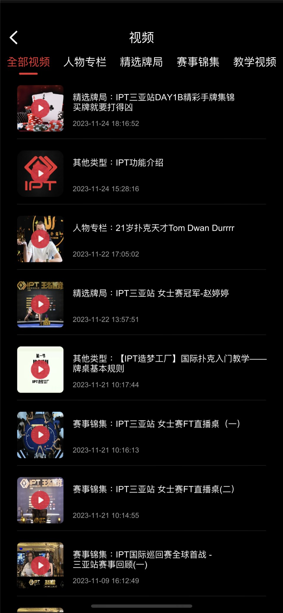

Capabilities and Boundaries
功能与公开范围
区分源码可直接验证的组件、玩法资料和截图所展示的产品场景。
源码可验证
| 领域 | 公开内容 |
|---|---|
| 服务 | GMServer、GMServantImp、gameserver、gameroot |
| 房间流程 | core 中入桌、离桌、掉线、玩家信息和开局处理 |
| 数据 | DBOperator 数据操作组件 |
| 接口 | GM、游戏、房间、机器人和其他 Tars 定义 |
| 协议资源 | 已编译的 proto.bytes 文件 |
| 玩法资料 | 快速游戏、SNG、Private 时序资料 |
产品场景展示
截图展示在线赛事、赛事资讯、现场报名、卡包、酒店、内容学习和牌桌体验。这些界面提供产品背景，不代表当前公开树已经包含每项功能的完整客户端、后台与数据库实现。


尚未验证为完整
完整 MTT、排名、票务、签到、酒店、视频、后台、支付、数据库迁移和独立客户端，均需要用源码目录、干净环境构建和测试结果逐项验证。